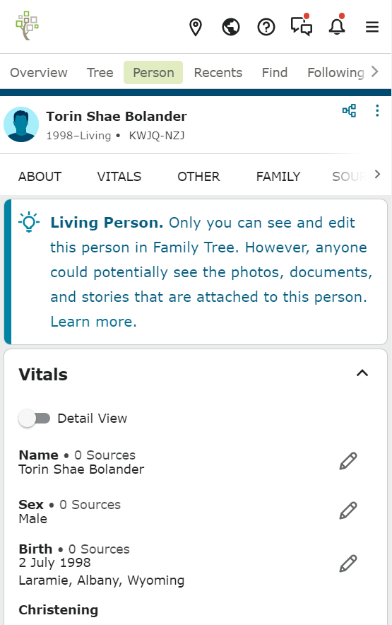

Visual Hierarchy
- FamilySearch
- FamilySearch Person page
- 
- FamilySearch pages, and the person page in particular, are very specific and clear in how they utilize color and font size in order to direct the user to the most important sections of the page.
Hick's Law
- Steam by Valve
- Steam

- The Steam store home page has minimal menuing, focusing on a small number of banners that display new additions, best sellers, and recommendations. Upon additional scrolling there are more specific menus, but these are also restricted in quantity to at most 6 options.
White Space and Clean Design
- The Church of Jesus Christ of Latter-day Saints
- The Church of Jesus Christ
- One of the most striking features of the Church home page is how it utilizes whitespace to separate every major section of the page so that only one message is present at a time.